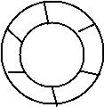

A list /queue can also be circular in which case,it is called a circular queue or circular linked list.When we discussed queues ,you might have thought that as the items froma queue get deleted ,the space for that item is reclaimed.However this is not used those queue poisitions continue to be empty.This problem is solved by circular linked lists. which are usually in the form of circular queues.
Instead of using a linear approach ,a circular list takes the circular approach.That is items in acircular list are arranged to form a circular shape.Thatiswhy circular linked list does not have a beginning or end.The logical representation of acircular queue is:
